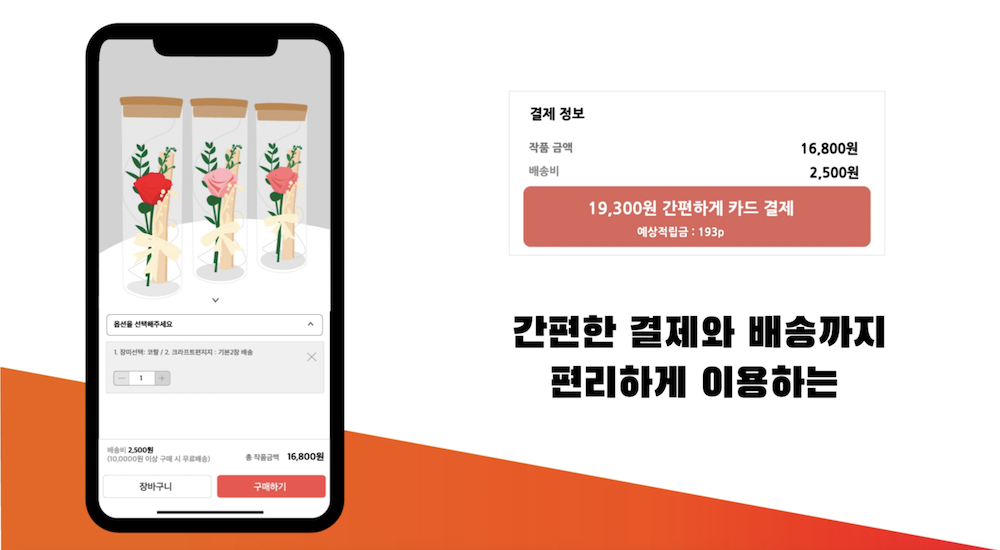
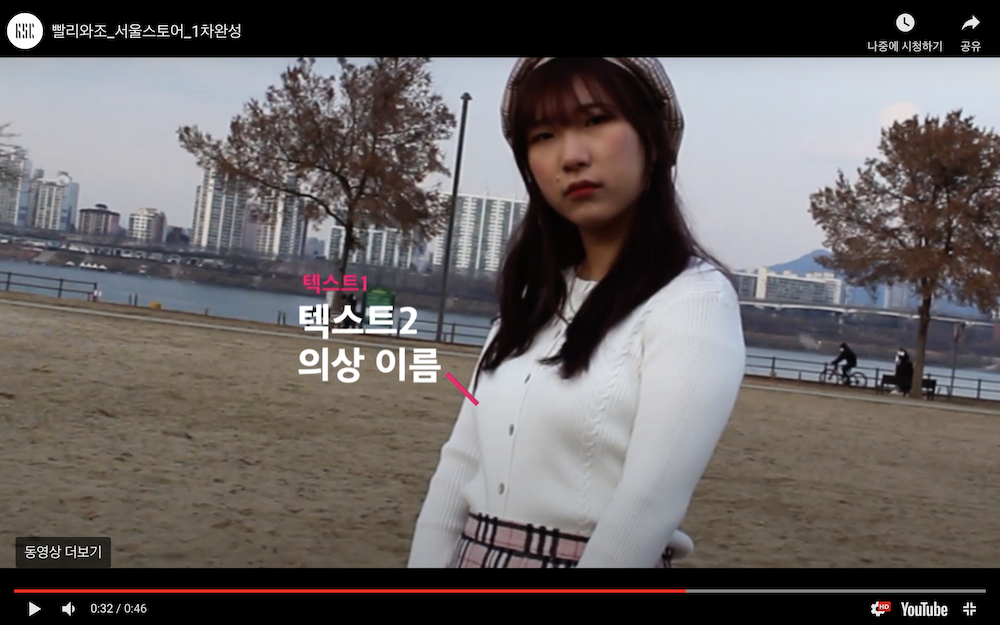

영상 디자인
2020년 1학년 2학기 영상 디자인 직무수행능력평가1
장윤제 교수님 수업
원본영상 : https://youtu.be/SMee6GWQLao
아이디어스 앱을 주제로 선정하여 홍보영상을 제작하였다. 전부 일러스트 작업을 바탕으로 아이디어스의 기능들을 소개하며 차별화된 부분들을 보여주는것이 목표였다.
손이 많이 가는 작업이였지만 가다듬고 모션작업을 넣을 수록 변해가는 영상을 보며 재미를 느꼈던 중간평가였다.
영상 디자인
2020년 1학년 2학기 영상 디자인 직무수행능력평가2
장윤제 교수님 수업
원본영상: https://youtu.be/oHsTkSVY1j0
이번주 종강을 앞두고 있는 팀플로 진행하는 직무수행능력평가2로, 서울스토어라는 패션 앱 홍보를 주제로 선정하여 영상을 촬영하였다.
시나리오를 두개로 나누어 첫번째는, 기능위주로 일상적인 영상을 담았다. 두번째는, 트레킹을 활용해 감각적이며 룩에 더 집중할 수 있도록 제작하였다.
최종 마무리 편집이 완료되지 않은 영상본.
About me

Name: Kim eui jin (김의진)
Birth: 2000.09.18/ Age:21
MBTI: ENFP-T
Popular Post
Contents design
Video design
Favorite
Follow Me
SNS
lovebeast20@naver.com
instagram: @euijin21
instagram: @euijin21